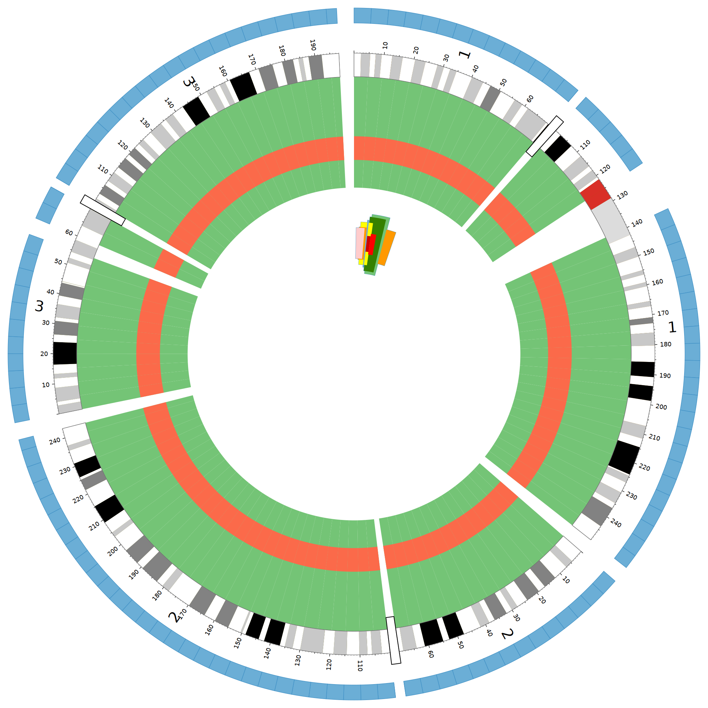
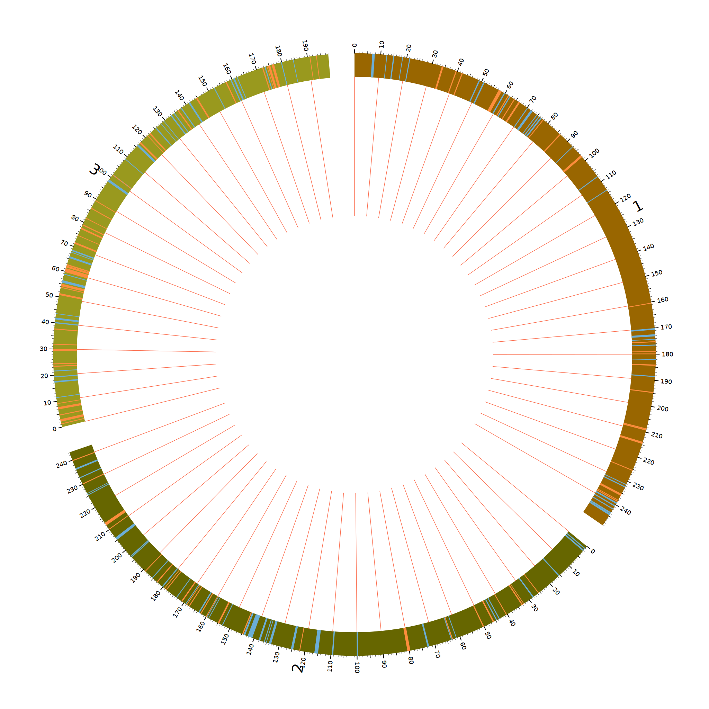
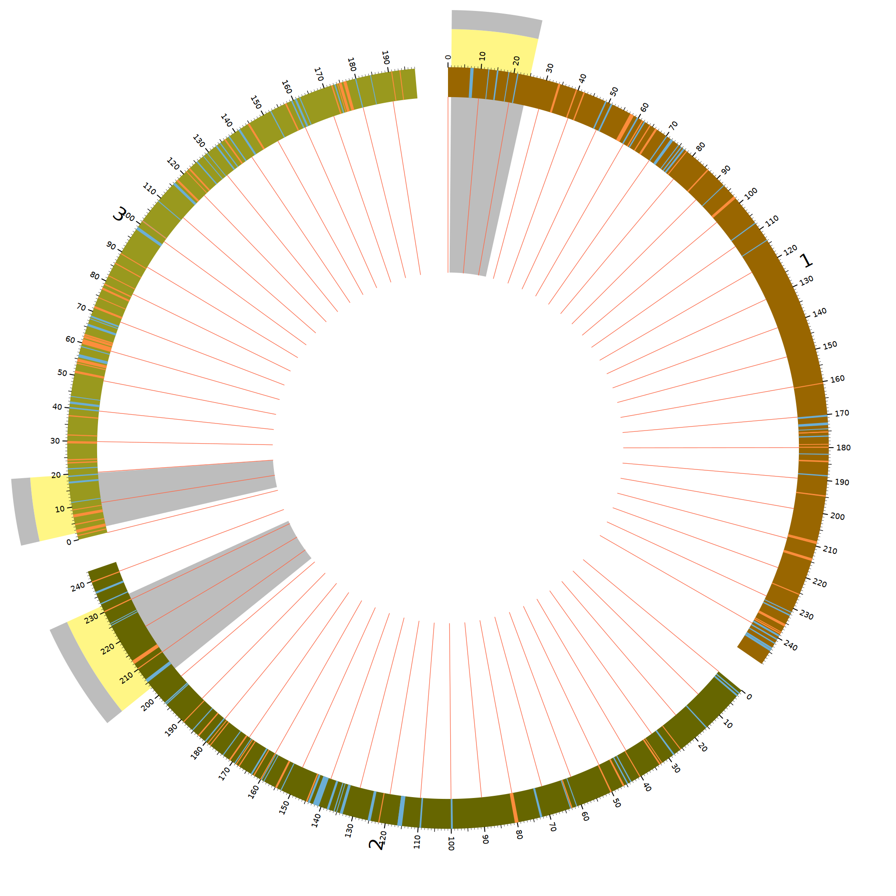

首先就需要我们有一个指明需要强调的数据文件;表明了在ideogram中需要highlight的区域
...
hs1 1298972 1300443
hs1 1311738 1324571
hs1 1397026 1421444
hs1 1437417 1459927
...

起到作用的代码部分如下
##定义高亮###
< highlights>
###优先画，也就是画在底层
z=0
fill_color*=green
< highlight>
###强调的数据文件
file=data/highlight.txt
r0=0.6r
r1=1.0r-100p
< /highlight>
< highlight>
file=data/highlight.txt
#####被强调区域的位置，和长度设置##
r0=0.7r
r1=0.7r+100p
z=5
fill_color*=red
< /highlight>
< highlight>
file=data/highlight.txt
r0=1.1r
r1=1.15r
fill_color*=blue
stroke_color=dblue
stroke_thickness=2
< /highlight>
< /highlights>
从代码上也可以看到，出现了绿、红、蓝三种强调的颜色
当他们在相同的位置显示时，通过z参数可以设置，
当Z越大，它的位置越高看起来也就在上面
hs1 12870075 25724192 fill_color=green,z=37,r0=0.4r-126.289p,r1=0.4r+126.289p
hs1 10044837 11066617 fill_color=blue,z=95,r0=0.4r-100.0388p,r1=0.4r+100.0388p
在ideogram中展示highlight，同时理解了grid是什么东西

图中主要展示的是两类基因，分别以不同的颜色加以区分，蓝色和橙色
< highlights>
##设置所有的highlight的高度
z=5
###将高亮显示在ideogram上
ideogram=yes
fill_color=blue
< highlight>
###重新定义#
file=data/other_genes.txt
z=10
< /highlight>
< highlight>
file=data/omim_genes.txt
z=10
fill_color=orange
< /highlight>
< /highlights>
通过在higlights标签中使用ideogram参数来使得高亮在ideogram中显示
终于搞懂了grid这个东西是什么了
从上面图中也可以看到在每个10的倍数的刻度线上都有一条线对应着,主要靠着三个参数
- show_grid
- grid_start=0.5r
- grid_end=dims(ideogram,radius_outer>)
show_grid=yes
###网格的展示########
grid_start=0.5r
grid_end=dims(ideogram,radius_inner)
##########对应刻度显示grid##########
< tick>
spacing=10u
size=15p
thickness=3p
show_label=yes
label_size=20p
label_offset=10p
format=%d
grid=yes
grid_color=vgrey
grid_thickness=2p
< /tick>
第二种起强调作用的模式

< highlight>
file=data/highlights.txt
r0 = 0.5r
r1 = 1r
fill_color = lgrey
< /highlight>
< highlight>
file=data/highlights.txt
r0 = 1r
r1 = 1.1r
fill_color = lyellow
< /highlight>
< highlight>
file=data/highlights.txt
r0 = 1.1r
r1 = 1.15r
fill_color = lgrey
< /highlight>
从源代码上也可以看出来，就是对一个区域，在不同的位置填充不同的颜色，起到的强调效果还不错